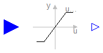
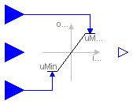
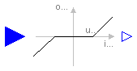

This package contains discontinuous and non-differentiable, algebraic input/output blocks. In particular the following blocks are provided:
Limiter Limit the range of a signal to fixed limits. VariableLimiter Limit the range of a signal to variable limits. DeadZone Provide a region of zero output.
Release Notes:
Copyright © 1999-2002, Modelica Association and DLR.
The Modelica package is free software; it can be redistributed and/or modified under the terms of the Modelica license, see the license conditions and the accompanying disclaimer in the documentation of package Modelica in file "Modelica/package.mo".
| Name | Description |
|---|---|
| Limiter | Limit the range of a signal |
| VariableLimiter | Limit the range of a signal with variable limits |
| DeadZone | Provide a region of zero output |

The Limiter block passes its input signal as output signal as long as the input is within the specified upper and lower limits. If this is not the case, the corresponding limit is passed as output.
| Name | Default | Description |
|---|---|---|
| uMax[:] | {1} | Upper limits of input signals |
| uMin[size(uMax, 1)] | -uMax | Lower limits of input signals |
block Limiter "Limit the range of a signal"
parameter Real uMax[:]={1} "Upper limits of input signals";
parameter Real uMin[size(uMax, 1)](max=uMax) = -uMax
"Lower limits of input signals";
extends Interfaces.MIMOs(final n=size(uMax, 1));
equation
for i in 1:n loop
y[i] = if u[i] > uMax[i] then uMax[i] else if u[i] < uMin[i] then uMin[i] else
u[i];
end for;
end Limiter;

The Limiter block passes its input signal as output signal as long as the input is within the upper and lower limits specified by the two additional inputs limit1 and limit2. If this is not the case, the corresponding limit is passed as output.
| Name | Default | Description |
|---|---|---|
| n | 1 | Number of inputs (= number of outputs) |
block VariableLimiter
"Limit the range of a signal with variable limits"
extends Interfaces.MIMOs;
Interfaces.InPort limit1(
final n=n);
Interfaces.InPort limit2(
final n=n);
protected
Real uMax[n];
Real uMin[n];
equation
for i in 1:n loop
uMax[i] = max(limit1.signal[i], limit2.signal[i]);
uMin[i] = min(limit1.signal[i], limit2.signal[i]);
y[i] = if u[i] > uMax[i] then uMax[i] else if u[i] < uMin[i] then uMin[i] else
u[i];
end for;
end VariableLimiter;

The DeadZone block defines a region of zero output.
If the input is within uMin ... uMax, the output is zero. Outside of this zone, the output is a linear function of the input with a slope of 1.
| Name | Default | Description |
|---|---|---|
| uMax[:] | {1} | Upper limits of dead zones |
| uMin[size(uMax, 1)] | -uMax | Lower limits of dead zones |
block DeadZone "Provide a region of zero output"
parameter Real uMax[:]={1} "Upper limits of dead zones";
parameter Real uMin[size(uMax, 1)](max=uMax) = -uMax
"Lower limits of dead zones";
extends Interfaces.MIMOs(final n=size(uMax, 1));
equation
for i in 1:n loop
y[i] = if u[i] > uMax[i] then u[i] - uMax[i] else if u[i] < uMin[i] then
u[i] - uMin[i] else 0;
end for;
end DeadZone;